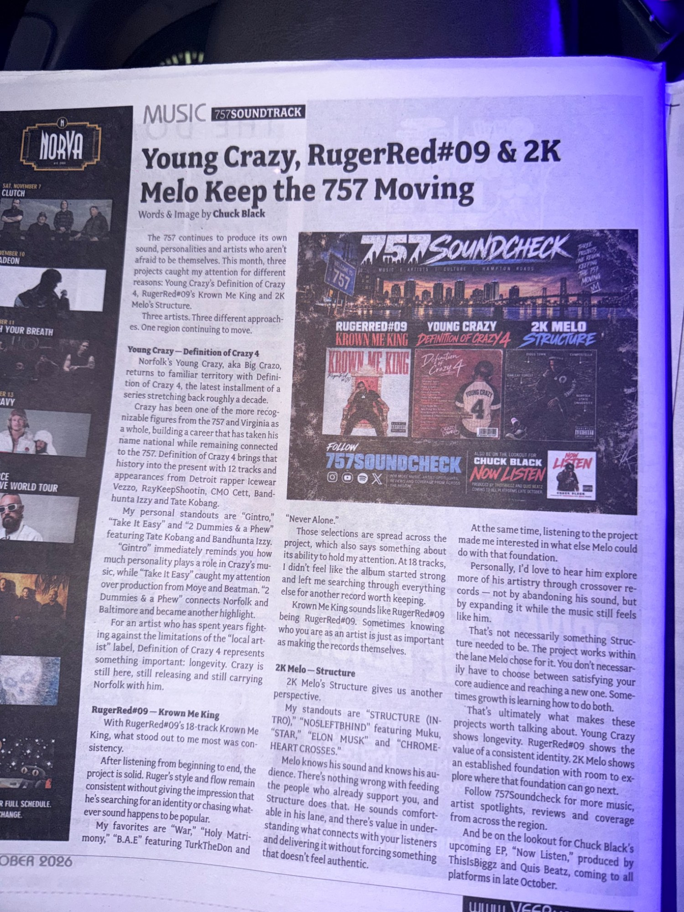

Young Crazy, RugerRed#09 & 2K Melo Keep the 757 Moving
Three projects, three approaches: longevity, artistic identity and room for growth in the 757.

Read the Full Article
The 757 continues to produce its own sound, personalities and artists who aren't afraid to be themselves. This month, three projects caught my attention for different reasons: Young Crazy's Definition of Crazy 4, RugerRed#09's Krown Me King and 2K Melo's Structure.
Three artists. Three different approaches. One region continuing to move.
Young Crazy — Definition of Crazy 4
Norfolk's Young Crazy, aka Big Crazo, returns to familiar territory with Definition of Crazy 4, the latest installment of a series stretching back roughly a decade.
Crazy has been one of the more recognizable figures from the 757 and Virginia as a whole, building a career that has taken his name national while remaining connected to the 757. Definition of Crazy 4 brings that history into the present with 12 tracks and appearances from Detroit rapper Icewear Vezzo, RayKeepShootin, CMO Cett, Bandhunta Izzy and Tate Kobang.
My personal standouts are “Gintro,” “Take It Easy” and “2 Dummies & a Phew” featuring Tate Kobang and Bandhunta Izzy.
“Gintro” immediately reminds you how much personality plays a role in Crazy's music, while “Take It Easy” caught my attention over production from Moye and Beatman. “2 Dummies & a Phew” connects Norfolk and Baltimore and became another highlight.
For an artist who has spent years fighting against the limitations of the “local artist” label, Definition of Crazy 4 represents something important: longevity. Crazy is still here, still releasing and still carrying Norfolk with him.
RugerRed#09 — Krown Me King
With RugerRed#09's 18-track Krown Me King, what stood out to me most was consistency.
After listening from beginning to end, the project is solid. Ruger's style and flow remain consistent without giving the impression that he's searching for an identity or chasing whatever sound happens to be popular.
My favorites are “War,” “Holy Matrimony,” “B.A.E” featuring TurkTheDon and “Never Alone.”
Those selections are spread across the project, which also says something about its ability to hold my attention. At 18 tracks, I didn't feel like the album started strong and left me searching through everything else for another record worth keeping.
Krown Me King sounds like RugerRed#09 being RugerRed#09. Sometimes knowing who you are as an artist is just as important as making the records themselves.
2K Melo — Structure
2K Melo's Structure gives us another perspective.
My standouts are “STRUCTURE (INTRO),” “NO5LEFTBHIND” featuring Muku, “STAR,” “ELON MUSK” and “CHROMEHEART CROSSES.”
Melo knows his sound and knows his audience. There's nothing wrong with feeding the people who already support you, and Structure does that. He sounds comfortable in his lane, and there's value in understanding what connects with your listeners and delivering it without forcing something that doesn't feel authentic.
At the same time, listening to the project made me interested in what else Melo could do with that foundation.
Personally, I'd love to hear him explore more of his artistry through crossover records — not by abandoning his sound, but by expanding it while the music still feels like him.
That's not necessarily something Structure needed to be. The project works within the lane Melo chose for it. You don't necessarily have to choose between satisfying your core audience and reaching a new one. Sometimes growth is learning how to do both.
That's ultimately what makes these projects worth talking about. Young Crazy shows longevity. RugerRed#09 shows the value of a consistent identity. 2K Melo shows an established foundation with room to explore where that foundation can go next.
Follow 757Soundcheck for more music, artist spotlights, reviews and coverage from across the region.
And be on the lookout for Chuck Black's upcoming EP, Now Listen, produced by ThisIsBiggz and Quis Beatz, coming to all platforms in late October.
As Published in VEER Magazine
Photograph of the original printed article, including the byline and magazine layout.
